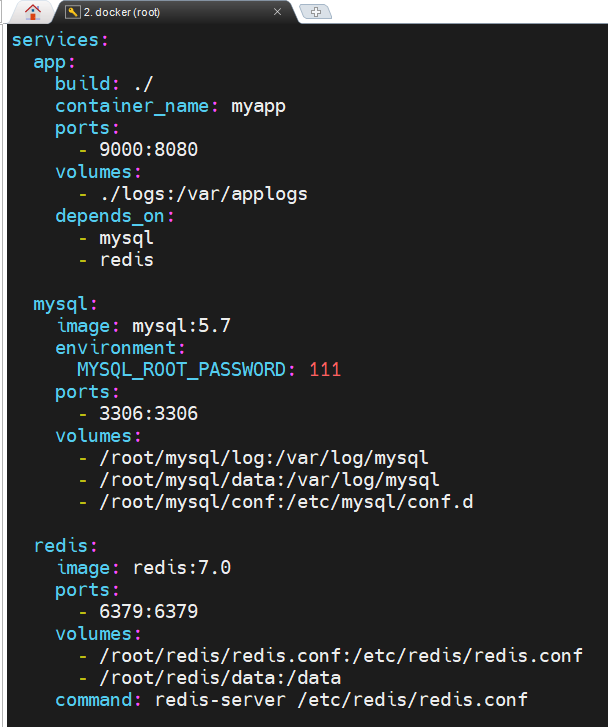
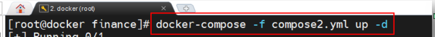
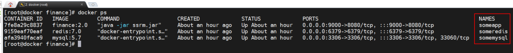

docker compose
Docker Compose 是一个需要在 Docker 主机上进行安装的 Docker 容器编排外部工具。其通过一个声明式的配置文件描述整个应用，然后通过一条命令完成应用部署。
部署成功后，还可通过一系列简单命令实现对其完整生命周期的管理。
Docker Compose 使用 YAML 文件来定义服务。官方推荐的默认文件名为 compose.yml ，但同时也支持 docker-compose.yml。
一般先新建一个目录，目录名称一般为项目名称，然后再将项目所需的所有镜像、微服务的 Dockerfile 放入该目录，并在该目录中新建 compose 文件
顶级属性及其子属性
name（可选）
可选项目名, 影响容器/网络命名前缀
networks（可选）
用于定义和创建应用中所使用到的所有网络
未声明时 Compose 自动创建一个 <项目名>_default 网络
1
2
3
4
5
6
7
8
9
10
|
networks:
<网络标识1>: # 在compose文件使用该网络时使用该网络标识
name: <name> # 指定docker生成该网络的名字
driver: bridge # 网络类型（缺省时bridge）
attachable: ture # 非compose中容器能否连接到此网络(缺省false)
<网络标识2>:
name: <name2>
driver: bridge
attachable: ture
...
|
configs / secrets/ include（Compose v2.20+）
（ 可选，不常用）
1
2
3
|
configs: 配置文件
secrets: 机密数据
include: 引入其他 Compose 文件，实现配置复用和拆分
|
volumes（可选，不常用）
用于定义和创建应用中所使用到的所有 volume
声明命名卷（named volumes数据卷目录的具体位置，是由系统自动分配的）
，与 volumes: 指令下的 - ./local:/path 路径挂载不同
serivces（必须，子属性可选）
用于定义一个应用中所包含的服务/容器
1
2
3
4
5
6
7
8
9
10
11
12
13
14
15
16
17
18
19
20
21
22
23
24
25
26
27
28
29
30
31
32
33
34
35
36
37
38
39
40
41
42
43
44
45
|
services:
<service1>:
build:
context: ./ # 指定build路径
dockerfile: Dockerfile.prod # 指定 Dockerfile 文件名
args: # Dockerfile 里的 ARG构建参数列表
- VERSION=1.0
- DEBUG=true
container_name: <CONTAINER> # 指定生成容器名字
ports: # 端口映射列表
- 80:80
- 9000:8080
image: <IMAGE> #指定使用镜像名（有build时指定名字；单独存在从仓库拉取）
command: <COMMAND> # 覆盖 Dockerfile CMD
entrypoint: ["exec","avg"] # 覆盖 Dockerfile ENTRYPOINT
depends_on # 列表中指定的服务会先于当前服务启动
- <service2>
- <servicex>
expose: # 容器间宝路端口号
- 3000
networks: <name> #加入已经存在的网络，或顶级属性networks的网络
volumes:
- ./src:/app/src #绑定挂载：宿主机路径:容器路径
- pgdata:/var/lib/postgresql/data # 命名卷：卷名:容器路径
- /tmp # 匿名卷：只写容器路径
environment:
- KEY： value
- KEY2: value2
- KEY3: ${HOST_VAR:-default} # 取宿主机变量，没有则用默认值
restart: "no"/always/unless-stopped/... # 重启策略
deploy: # 指定该服务启动的容器的数量，不能再指定container_name 属性
mode: replicated
replicas: 6
stdin_open: true # 对应 -i
tty: true # 对应 -t
healthcheck: # 健康检查
test: ["CMD", "curl", "-f", "http://localhost"] # 检查命令
interval: 30s # 检查间隔
timeout: 5s # 单次超时
retries: 3 # 连续失败次数才算不健康
start_period: 10s # 启动宽限期（此期间失败不计数）
start_interval: 2s # 宽限期内的检查间隔
<service2>:
......
|
常用命令
通过docker-compose系列命令查看和控制compose中的所有服务容器
1
2
3
4
5
6
7
8
9
10
11
12
13
14
15
16
17
|
# 1. 进入文件所在目录
cd /path/to/compose.yaml
# 2. 先检查配置有没有写错
docker compose config
# 3. 启动
docker compose up -d
# 4. 确认状态
docker compose ps
# 5. 看日志确认是否正常
docker compose logs -f
# 6. 停止
docker compose stop/down [服务名...]
|
1
2
3
4
5
6
7
8
9
10
11
12
13
14
15
16
17
18
19
20
21
22
23
24
25
26
27
28
29
30
31
32
33
34
35
36
37
38
39
40
41
42
43
44
45
46
47
48
49
50
51
52
53
|
docker compose pull [服务名...]
// 拉取 compose 中服务依赖的全部镜像或指定镜像
docker compose config [服务名...]
// 检查 compose 文件是否正确并输出最终生效配置。-q 表示只有存在问题时才有输出
docker compose up [服务名...]
// 启动 compose 中的所有容器。-d 选项表示后台启动, -f指定compass文件名
docker compose logs [服务名...]
// 查看 compose 中所有服务或指定服务的运行日志
docker compose ps [服务名...]
// 列出 compose 中所有服务或指定服务
docker compose top [服务名...]
// 列出 compose 中当前正在运行的所有服务或指定服务的进程
docker compose images [服务名...]
// 列出 compose 中所有服务或指定服务对应的镜像
docker compose port [选项] 服务名 容器内端口
// 列出指定服务容器的指定端口所映射的宿主机端口
docker compose run [选项] 服务名 [命令] [参数...]
// 在指定服务上新建一个容器并执行一条命令
docker compose exec [选项] 服务名 [命令] [参数...]
// 进入指定服务容器执行命令
docker compose pause [服务名...]
// 暂停 compose 中所有服务容器或指定服务容器
docker compose unpause [服务名...]
// 恢复 compose 中处于暂停状态的所有服务容器或指定服务容器
docker compose stop [服务名...]
// 停止 compose 中所有服务容器或指定服务容器，默认先发 SIGTERM，超时后 SIGKILL
docker compose restart [服务名...]
// 重启 compose 中所有服务容器或指定服务容器，不重新读取配置文件
docker compose start [服务名...]
// 启动 compose 中所有已创建但停止的服务容器
docker compose kill [服务名...]
// 通过发送 SIGKILL 信号停止指定服务的容器，-s 可换其他信号
docker compose rm [服务名...]
// 删除 compose 中处于停止状态的所有服务容器或指定服务容器
docker compose down
// 停止并删除 compose 中的所有服务容器和网络，-v 连数据卷一起删，--rmi 删除镜像
|
示例

在项目目录下执行 up (-f -d)

查看容器成功启动
